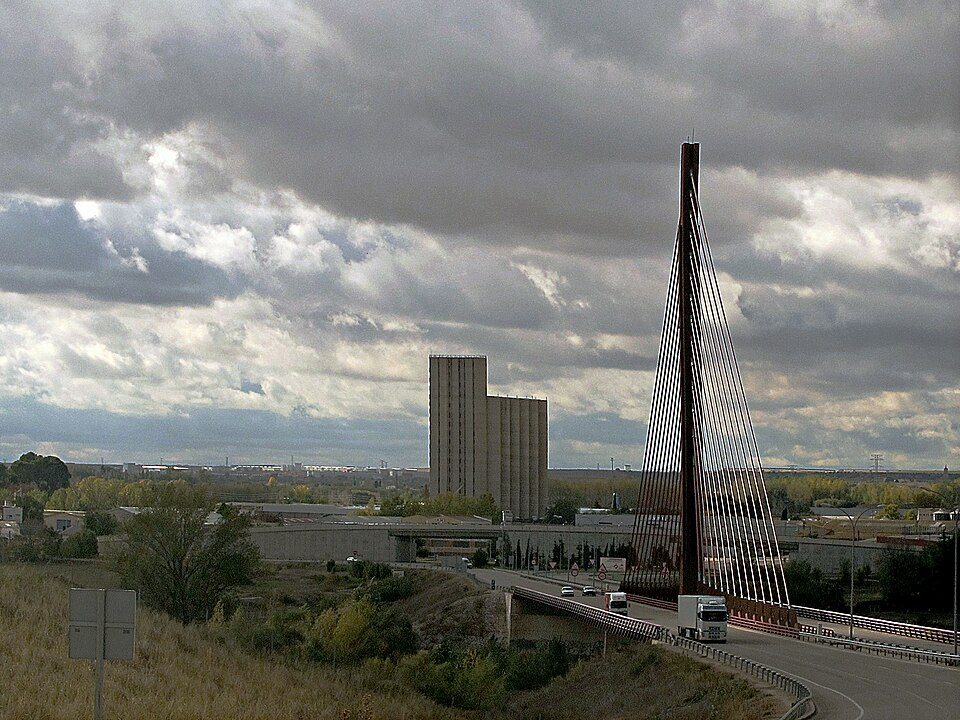
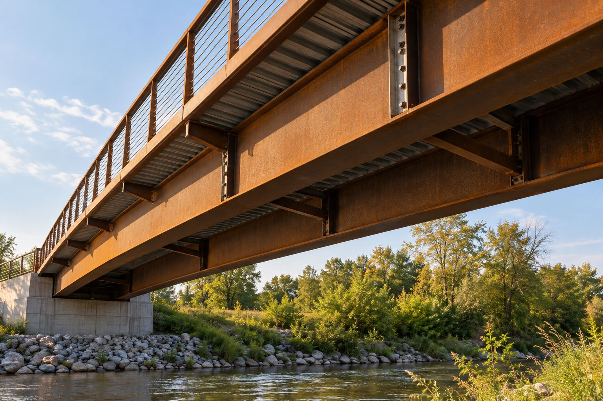

Structural plate
Structural plateASTM A588/A588M
ASTM A588 Grade K Plate
Grade-specific structural plate inquiries for projects that name ASTM A588/A588M Grade K and require traceable material acceptance.
Explore material ↗
Grade-led plate inquiries for fabricated structures and engineering projects.
Structural plateGrade-specific structural plate inquiries for projects that name ASTM A588/A588M Grade K and require traceable material acceptance.
Explore material ↗ Structural plate
Structural plateA complete JIS reference for weathering plate used in welded structural applications, with dimensions and acceptance records confirmed for the project.
Explore material ↗ Structural plate
Structural plateWeathering structural plate for projects that specify the S355J2W designation and its associated requirements.
Explore material ↗
Structural plateA high-strength, low-alloy structural plate inquiry option with atmospheric corrosion resistance.
Explore material ↗Structural plateAn ASTM structural steel specification for inquiries requiring improved atmospheric corrosion resistance.
Explore material ↗Structural plateWeathering steel plate for drawings and material lists that call for S355J0W.
Explore material ↗Structural plateA weathering structural steel designation for procurement to the specified Chinese material standard.
Explore material ↗ Structural plate
Structural platePlate inquiries for projects specifying S235J2W to EN 10025-5. Confirm the complete designation, dimensions, condition and inspection requirements.
Explore material ↗ Structural plate
Structural plateAn inquiry option for drawings that call for S355K2W. Define the standard edition, plate thickness, delivery condition and required material records.
Explore material ↗ Structural plate
Structural plateBridge plate inquiries specifying ASTM A709 Grade 50W. Confirm the project specification, dimensions, toughness requirements and inspection scope.
Explore material ↗Send the grade, size and quantity. Let’s define the next step.